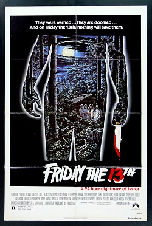
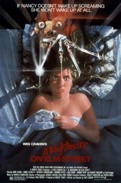

A slasher film is a subgenre of horror films involving a killer stalking and murdering a group of people, usually by use of bladed or sharp tools such as knives, chainsaws, scalpels, etc. Although the term "slasher" may occasionally be used informally as a generic term for any horror film involving murder, film analysts cite an established set of characteristics which set slasher films apart from other horror subgenres, such as monster movies, splatter films, supernatural and psychological horror films.
Released in October 1978 Halloween spawned a film franchise comprising thirteen films which helped construct an extensive backstory for its antagonist Michael Myers, sometimes narratively diverging entirely from previous installments. Additionally, a novelization, a video game and comic book series have been based on the film. The film grossed $70 million, becoming one of the most profitable independent films of all time. Primarily praised for Carpenter's direction and score, many critics credit the film as the first in a long line of slasher films inspired by Alfred Hitchcock's Psycho (1960) and Bob Clark's Black Christmas (1974). It is considered one of the greatest and most influential horror films ever made. In 2006, it was selected for preservation in the United States National Film Registry by the Library of Congress as being "culturally, historically, or aesthetically significant"..
Friday the 13th

Released on May 9, 1980, Friday the 13th was a major box office success, grossing $59.8 million worldwide. Critical response was divided, with some praising the film's cinematography and score, while numerous others derided it for its depiction of graphic violence. Aside from being the first independent film of its kind to secure distribution in the U.S. by a major studio, its box office success led to a long series of sequels, a crossover with the A Nightmare on Elm Street film series, and a 2009 series reboot.
A Nightmare on Elm Street

Release on November 9, 1984, A Nightmare on Elm Street is an American supernatural slasher film written and directed by Wes Craven and produced by Robert Shaye. It is the first installment in the A Nightmare on Elm Street franchise and stars Heather Langenkamp, John Saxon, Ronee Blakley, Robert Englund as Freddy Krueger, and Johnny Depp in his film debut. The film's plot concerns a group of teenagers who are targeted by Krueger, an undead former child killer who can murder people through their dreams, as retribution against their parents who burned him alive.In 2021, A Nightmare on Elm Street was selected for preservation in the United States National Film Registry by the Library of Congress as being "culturally, historically, or aesthetically significant".